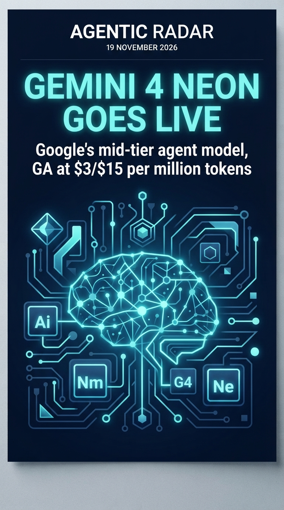

[997]
Google Gemini 4 Neon went GA on Nov 18 at $3/$15 per million tokens with a 1M-token context, for coding, knowledge work and science; GitHub Copilot added it the same day. [announced-live]
Daily digest

Watch [996] — need primary filing: fetch the SEC/EDGAR Nov 18 registration statement for Anthropic's $83 pricing — IPO claims require a primary filing, not secondary reports.
Watch [1006] — need dated primary + artifact: fetch the Z.ai GLM 5.5 model card and API docs — launch-day listing rests on a single aggregator source with no specs.
Watch [999] — need dated primary + artifact: fetch Meta's Muse Ember announcement and Meta Model API docs — pricing and 1M context are reported second-hand here.
Rejected [1003] — duplicate: self-hosted Claude Managed Agents private beta was already covered in the Nov 17-18 digests.
Rejected [1004] — duplicate: Kimi K3.1 Pro Highspeed on Bedrock was already covered on Nov 17.
Rejected [1005] — thin sourcing: MiniMax M3.1 Flash rests on a single aggregator catalog post with no vendor announcement.
Rejected [1007] — [older] Nov 2 legal-domain variant release, context only.
Rejected [1008] — [older] Oct 29 Mistral Large 4 weights, already covered when Studio agents followed on Nov 5.
Rejected [1010] — [older] Nov 5 Muse Voice rollout, already covered in earlier digests.